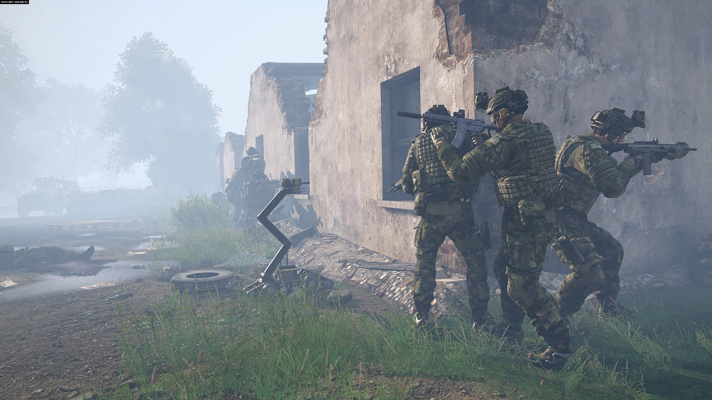
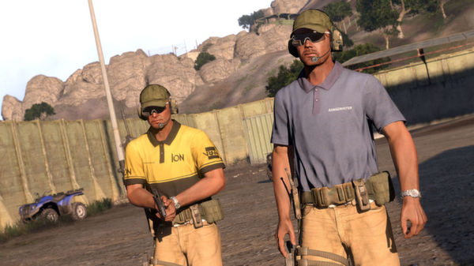
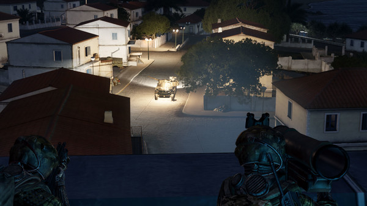
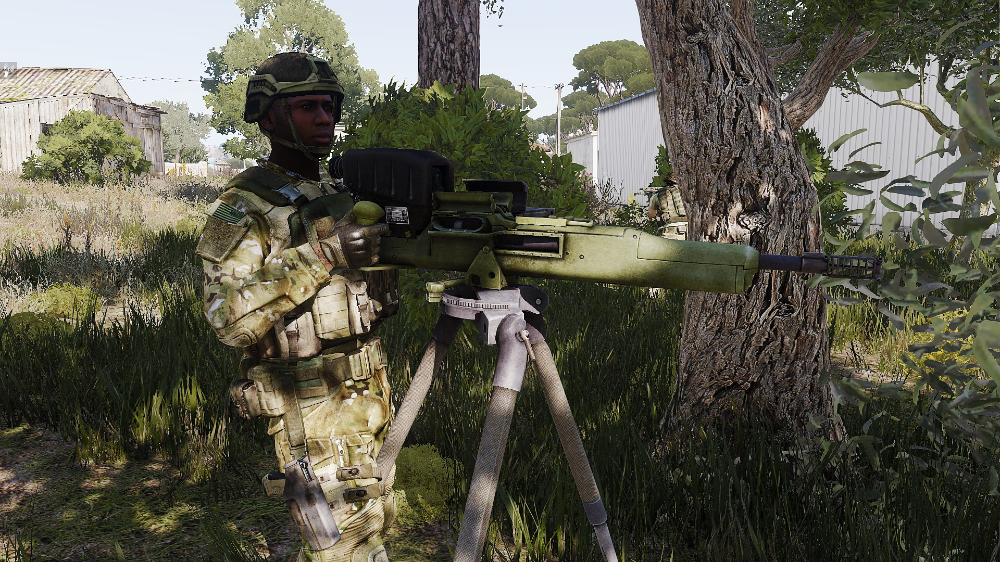

Weaponary
The Infantry's arsenal is brimming with weapons. Whatever the target, the infantry have something that can deal with it. With over 40 different weapons and a plethora of attacments, Arma 3 is an infantrymans playground.
Primary Weapons
When all said and done, it all comes down to an Infantryman and his rifle. Nowadays is no different, only that he has more choice. Arma 3 contains many different primary weapons ranging from SMG's and rifles to machine guns and sniper rifles. Arma 3 has many different series of weapons from the MX to the Katiba, the promet or the AK-15.
Secondary Weapons
While your rifle may be your primary weapon, you may not always have it. Weapon malfunctions or misplacement can leave you without a primary weapon, now you need a backup. While primary weapons are the main attractions when it comes to small arms, secondary weapons are no less improtant. It could be a revolver, .45 caliber pistol or something more exotic.
Launchers
Trying to kill something big? Use a bigger weapon. In Arma 3 the infantry aren't the only things trying to kill you. Tanks, helicopters and planes all want a go. In this case, small arms won't do. You need something bigger, something like a launcher.
Static weaponary
While being mobile is great, sometimes getting the most firepower requires a heavy weapon no man could carry on his own. Arma 3 includes many static weapons for a whole range of uses such as HMGs, GMGs, AT, AA and mortars
